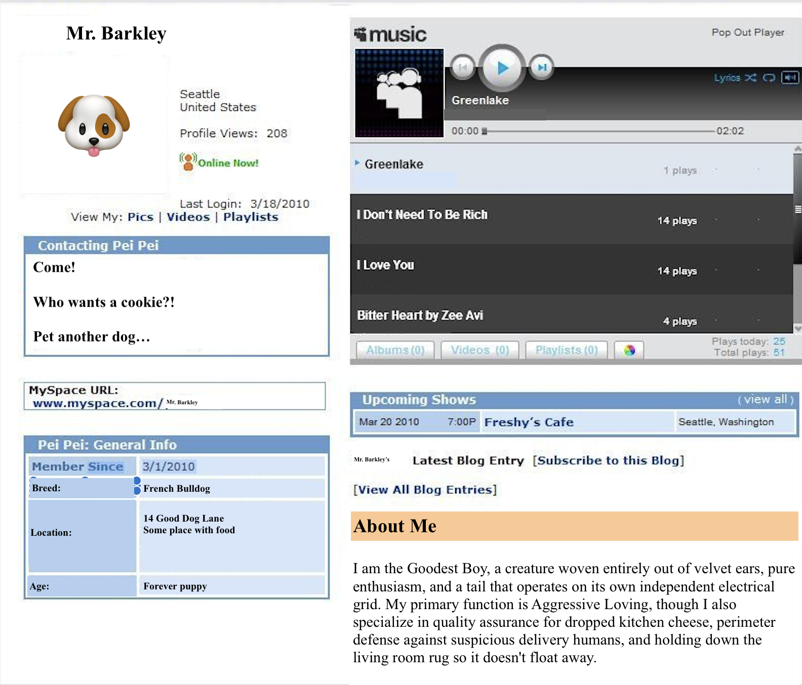
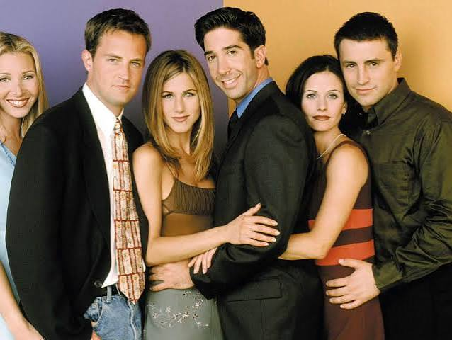
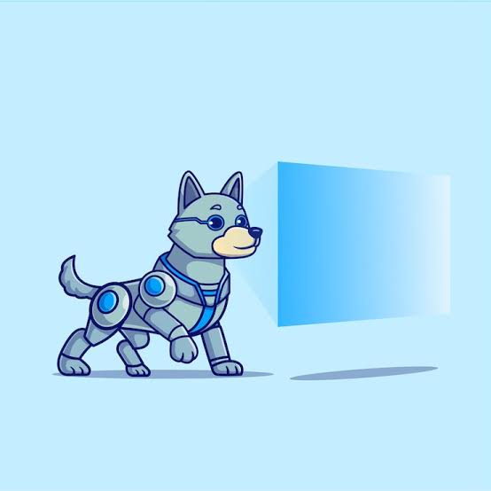

August 2026
Github:
Movie Recommendation Assistant
An AI-powered movie recommendation assistant built with Streamlit and Retrieval-Augmented Generation (RAG).
By
combining sentence embeddings and ChromaDB vector search with a local Ollama LLM, the application delivers
grounded, context-aware suggestions and film insights across a 100k-movie IMDb dataset—helping families,
couples, and movie enthusiasts decide what to watch.
"A Dog's Place" ~ MySpace for dogs
Take the old myspace designed and change its features to reflect what a dog would post like:

July 2025
Github:
FRIENDS API
A full-stack web application built with React.js, HTML5, CSS3, REST APIs, and a SQL database, combining
interactive media features.
Features dedicated profile pages showcasing character names, iconic quotes, and personality
breakdowns—complete with a themed "PIVOT!" back-to-home navigation button.
Includes linked detail pages exploring various series topics alongside my personal opinions. Powered by REST
API integrations and reliable database migration workflows to ensure clean state management and performance.

October 2025
Github:
WhatsAppDogCreated for Bridgewater State University's Comp390 course. WhatsApp Dog Application A CRM designed for Animal Rescue orginizations in the New England area who focus on domesticlly located animals (i.e. dogs, cat, squirrels, racoons, etc) The end goal is to provide a location where rescues administrators can create an account for their organization to hold and organize data regaurding Staff/volunteers || Inventory || Shelter Occupents || Forms (applciation docs, medial records, etc.)
